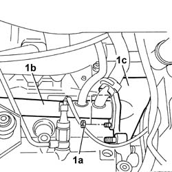
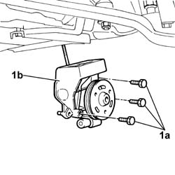
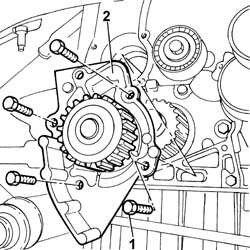
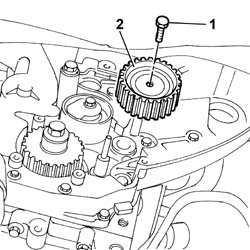
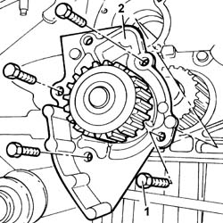

1088C14 WATER PUMP - R + R WITH DRIVE BELT REMOVED
- Path
- Procedures > 10 ENGINE UNIT > 1088 ENGINE COOLING > 1088C WATER PUMP AND THERMOSTAT > 1088C14 WATER PUMP - R + R WITH DRIVE BELT REMOVED
- Kind
- repair procedure (removal / refitting; the operation number is the code)
- Applies to
- all engines; all production periods
- Interactive page
- https://sloeber94.github.io/elrnDB-fDct/en/#/244000948
Applies to: engines: 2.8 JTD 8V; all production periods
 Removing
Removing
 Refitting
RefittingOp. 5530A14 ALTERNATOR - R+R FOR VERSIONS WITH AIR CONDITIONER
1. Undo the nuts (1a) fixing the rigid pipe (1b) to the water pump (1c).

Applies to: engines: 2.8 JTD 8V; all production periods
1. Undo the fixing bolts (1a) and remove the water pump (1b).

Applies to: engines: 2.8 JTD 8V; all production periods
Refitting
Removing- Place the water pump in position and tighten the bolts checking the torque.
 | Value - daNm | Fastening | Component | Ø |
|---|---|---|---|---|
. | 5 | Bolt | COOLANT PUMP | M10 X 1.25 |
- Tighten the nuts fixing the rigid pipe to the water pump checking the torque.
| Value - daNm | Fastening | Component | Ø |
|---|---|---|---|---|
. | 2,5 | Nut | COOLANT PUMP RIGID INLET PIPE | M8 X 1,25 |
Op. 5530A14 ALTERNATOR - R+R FOR VERSIONS WITH AIR CONDITIONER
Applies to: engines: 2.0 JTD 8V; all production periods
Removing
Refitting- Position a suitable container for collecting the coolant.
- Disconnect the lower sleeve from the radiator and drain the engine coolant.
- Recover any coolant that emerges.
1. Undo the bolts fixing the water pump to the crankcase.
2. Remove the water pump complete with O-ring underneath.

Applies to: engines: 2.0 JTD 8V; all production periods
Refitting
Removing- Replace the O-ring before refitting the water pump.
- Fit the water pump tightening the fixing bolts to torque.
| Value - daNm | Fastening | Component | Ø |
|---|---|---|---|---|
. | 1,5 | Bolts | COOLANT PUMP | - |
- Connect the lower sleeve to the radiator and drain the engine coolant.
Applies to: engines: 2.3 JTD 16V; all production periods
Removing
RefittingSee in Op. 1060E30
See in Op. 1060E10
1. Undo the retainining bolt.
2. Remove the timing belt fixed tensioner.

Applies to: engines: 2.3 JTD 16V; all production periods
- Position a suitable container for collecting the coolant.
- Disconnect the lower sleeve from the radiator and drain the engine coolant.
- Recover any coolant that emerges.
1. Undo the bolts securing the mount to the cylinder block/crankcase.
2. Remove the pressure pump mount complete with coolant pump.
Applies to: engines: 2.3 JTD 16V; all production periods
Refitting
Removing- Fit the pressure pump mount complete with coolant pump.
- Tighten the bolts securing the mount to the cylinder block/crankcase to the recommended torque.
| Value - daNm | Fastening | Component | Ø |
|---|---|---|---|---|
. | 2.5 | Bolt | COOLANT PUMP | M8 |
| Value - daNm | Fastening | Component | Ø |
|---|---|---|---|---|
. | 1 | Bolt | COOLANT PUMP | M6 |
- Connect the lower sleeve to the radiator and drain the engine coolant.
- Fit the fixed timing belt tensioner and tighten the retaining bolt to torque.
| Value - daNm | Fastening | Component | Ø |
|---|---|---|---|---|
. | 2.5 | Bolt | DRIVE BELT FIXED TENSIONER MOBILE VARIOUS | M8 |
See in Op. 1060E10
See in Op. 1060E30
Applies to: engines: 2.0 16V; all production periods
Removing
Refitting1. Undo the fixing bolts.
2. Remove the water pump.

Applies to: engines: 2.0 16V; all production periods
Refitting
Removing- Clean the contact surfaces between the water pump and the crankcase.
- Apply sealant to the contact surface between the water pump and the crankcase.
 | Description | Qty. | Component | Type | Classification |
|---|---|---|---|---|---|
. | Dow Corning 7091 | - | COOLANT PUMP | Silicone sealant | - |
- Fit the water pump.
- Tighten the bolts fixing the water pump.
| Value - daNm | Fastening | Component | Ø |
|---|---|---|---|---|
. | 1,2 | Bolt | COOLANT PUMP | - |